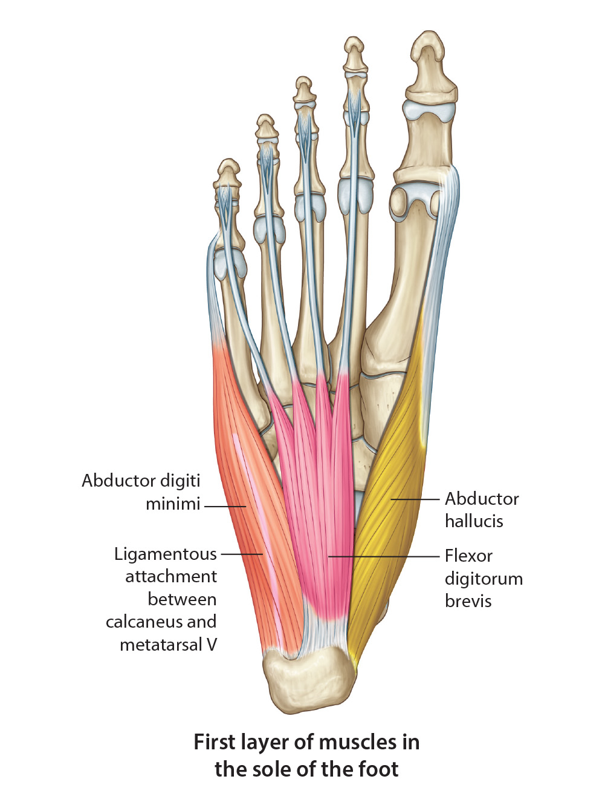

Lab 7 - Module 4 - The Foot: Page 6 of 8
×

Superficial layer of the sole of the foot:
|  |
| Tap on image to enlarge |
| Add the Abductor Digiti Minimi muscle. |
|
Origin - Medial and lateral processes of the calcaneal tuberosity, plantar fascia, intermuscular septum Insertion - Lateral side of the base of the proximal phalanx of the small toe Innervation - Lateral plantar nerve (S2,S3) Action - Abducts and flexes the small toe |
| Add the Flexor Digitorum Brevis muscles. |
|
Origin - Medial process of the calcaneal tuberosity, plantar fascia, intermuscular septum Insertion - Four tendons that each attach to the middle phalanges of each of the 4 lateral toes Innervation - Medial plantar nerve (S2,S3) Action - Flexes the lateral four toes |
| Add the Abductor Hallicus muscle. |
|
Origin - Flexor Retinaculum, medial process of the calcaneous, plantar fascia Insertion - Medial side of the base of the proximal phalanx of the great toe Innervation - Medial Plantar Nerve (S2,S3) Action - Abducts and flexes the great toe, helps maintain medial longitudinal arch |